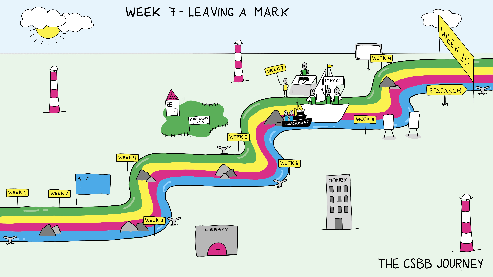

Week 7: Leaving a Mark#
The scheduled components of this week are:
Science Spotlight
Workshop: Knowledge Utilization
Workshop: Grant Writing
Friday Symposium
Introduction and goals#
The main topic of this week is “Impact”. As participants in research, it is important be aware of the impact of your research on different levels and in varying contexts. Further, it is good to be able to explain the necessity and importance of your work to others, especially when it comes to communicating with non-experts or writing grant applications.
These points will be explored as part of two workshops about Knowledge Utilization and Grant Writing. Knowledge utilization is describing how the results of your project could be used in the future. We call this developing the horizon viewpoint—what could happen in the future with this research. It is important to be able to explain how their results can be used and what the applications of that knowledge might be. This will particularly explored from the perspective of the Dutch Patent office.
Grant writing will focus on the technical details of writing grants, developing some best practices, understanding requirements, how to read the instructions and the elements of a research grant.
Workshop Knowledge Utilization#
Overview#
Fundamental scientific research is the engine of progress and of key importance to enlarge the frontiers of knowledge and understanding of its subject matter. However, empirical evidence shows that collaborations with industrial partners and companies often provide successful routes to professional pathways for the utilization and commercialization of the results from scientific research into novel innovations when aligned with medical unmet needs. Prior to embark into such collaborations transparent allocations and agreements on Intellectual Property Rights (hence: IPRs) should be arranged in such a way that they are beneficial for all stakeholders (e.g. universities, multinationals, small and medium sized enterprises and startups).
Key concepts#
This workshop provides a short introduction into the use of some IPRs (ic. patents) for technological innovations and more background with essential definitions. Prior to the workshop a reader will be disseminated for self-study. Towards the end of the workshop a first start with the identification of interesting patent documents will be presented for future use.
Workshop Grant Writing#
Overview#
One of the most important skills for a scientist is to be able to write grant applications. Like many other skills, it’s a skill that takes time, and practice to develop further. Every grant will have slightly different requirements, this workshop will cover how to read the instructions, how the systems around grants work, and what you should know in writing a grant.
Key concepts#
What are grants and what role do they play in research?
How does the grant system work?
Structure and components of grant applications
Tips for writing convincing grant applications
Group activity of the week#
Write a draft of the knowledge utilization portion of your grant application. You should generally be getting close to having a solid draft of your proposal done with all parts.
Discussion Questions#
What does it mean to overpromise? How do you keep your knowledge utilization realistic?
What does it mean to overpromise? how do you keep your knowledge utilization realistic?
Is knowledge utilization an important criteria in evaluating a research project and funding for it? Why or why not?
What do you hope the results of your project can be used for in the future? Is that realistic?
What are the problems with this method of funding research? What other ways could there be?
How do you handle rejection?
Weekly Submitted Assignment#
Group#
Kowledge utilization draft (1 paragraph)
Individual#
How important is knowledge for knowledge’s sake versus being able to apply it immediately to problems? How do you balance the two? (½ page)